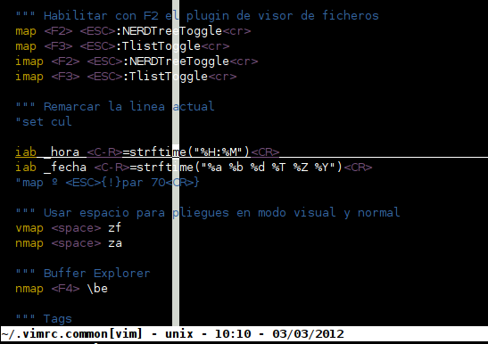

El fichero .vimrc¶
Antes de continuar con la parte avanzada del tutorial de vim, pasemos a examinar su principal fichero de configuración.
Ya hemos hablado del fichero .vimrc (o _vimrc en Windows). En él podemos poner nuestras configuraciones específicas y concretas, sólo para nuestro usuario (o para todos en /etc/vimrc).
En este tutorial de introducción a VIM sólo vamos a ver algunas opciones útiles e interesantes que podemos definir en el fichero .vimrc. En el manual de VIM (y en la gran cantidad de documentación que tenéis disponible en Internet) podéis encontrar muchas más opciones, variables e incluso ejemplos de código para programar (sí, programar) vuestras propias funciones para el editor.
El fichero .vimrc no sólo permite especificar parámetros y opciones de arranque para Vim: es mucho más que eso. En él podéis programar en el lenguaje interno propio de Vim (lenguaje de comandos) para realizaros vuestras propias funciones, pudiendo hacer cualquier cosa que os podáis imaginar: macros, comandos, filtros para el texto, llamadas a programas externos, etc.
Si queréis conocer la totalidad de opciones de Vim y una explicación de cada una de ellas, podéis hacerlo mediante la ayuda incluída al respecto en Vim, que se despliega tecleando :options (en modo comando).
Opciones¶
Las opciones que veremos a continuación para el fichero .vimrc no sólo están pensadas para ser utilizadas en el arranque del editor: podrán ser utilizadas en cualquier momento en modo comando durante la ejecución de VIM.
Veamos algunos ejemplos de opciones:
-
set nocompatible: Añadiendo en nuestro fichero vimrc la opción set nocompatible, hacemos que VIM nos permita utiliza funciones extras que no están disponibles en el VI clásico y tradicional. Os recomiendo que tengáis esta opción definida en el .vimrc. Utilizar set compatible u omitir esta opción hará que algunas de las mejores funcionalidades de VIM no estén disponibles, para preservar la compatibilidad con VI.
-
set autoindent: Esta función (también puede utilizarse set ai), hace que cuando pulsemos enter en un fichero de texto, la nueva línea que insertamos sea indentada automáticamente (es decir, se inserten espacios al principio de la misma y el cursor se posicione en una determinada posición). Esto puede servir, por ejemplo, para programar: si estamos escribiendo un bloque de código indentado a 3 espacios (por ejemplo), al pulsar enter no empezaremos en el primer carácter sino que automáticamente se nos situará el cursor en la columna 3. Literalmente, lo que hace VIM es que cuando pulsamos Enter, indenta la nueva línea a la misma profundidad que la anterior.
-
set noai: Esta función hace lo contrario de set autoindent, es decir, cuando pulsemos Enter iremos directamente al primer carácter de la siguiente línea. Esta función resulta muy útil cuando estamos editando código indentado y queremos, por ejemplo, pegar texto o código desde una selección de texto externa (copiar y pegar desde un navegador, otro editor, etc.). Como el texto que pegamos ya está indentado, no necesitamos que Vim lo indente añadiendo espacios. Si lo pegáramos tal cual, veríamos como la indentación original sumada a la identación automática de Vim haría que no se respetara el indentado real del texto. Para evitar esto, podemos pulsar ESC (pasar a modo comando), y teclear :set noai, y pegar el texto externo (que se pegará bien). Después podemos volver al modo de identación con ESC y :set ai.
-
set backup: Si está activada esta opción, cada vez que grabemos el fichero se almacenará una copia de la versión anterior como fichero~ (con el carácter '~' detrás).
-
set nobackup: Esto sirve para lo contrario que set backup, es decir, para deshabilitar la generación de ficheros de backup.
-
set ruler: Con set ruler, VIM muestra la posición X,Y actual del cursor en la barra de estado.
-
set wrap: Activa el cortado de líneas largas en pantalla: si tenemos activada esta opción y una línea es más larga (de ancho) que lo que podemos ver en nuestra ventana del editor, VIM la partirá (visualmente). Si no la tenemos activada, simplemente sólo podremos ver desde el inicio de la línea hasta lo que nos permita la ventana del editor o la terminal (pero no partirá la línea).
-
set nowrap: Las líneas que no caben en pantalla no serán visualmente partidas (lo contrario de set wrap).
-
set incsearch: Habilita la búsqueda incremental: esto implica que cuando hacemos búsquedas con el comando /, Vim no esperará a que pulsemos ENTER para comenzar la búsqueda. VIM irá buscando las palabras conforme vayamos tecleando sus diferentes letras.
-
set hlsearch: Habilita el coloreado de las palabras encontradas en las búsquedas, en un color diferente del color del texto.
-
set ignorecase: No diferenciar entre mayúsculas o minúsculas en las búsquedas.
-
set tabstop: Esta opción permite definir el tamaño (en espacios) de los tabuladores (por defecto suelen ser 8). Un ejemplo de uso sería set tabstop=4.
-
set sw: Esta opción permite especificar el ancho en caracteres que se desplazará una línea a la izquierda o a la derecha cuando usemos << y >> para indentar la línea actual o un bloque de texto seleccionado.
-
set expandtab: Convertir todos los tabuladores en espacios: ideal para los que, como yo, odiéis los tabuladores y prefiráis los espacios para tabular. Junto a las 2 opciones anteriores, cuando pulséis TAB no se introducirá un carácter tabulador sino el número de espacios prefijados.
-
set list (y set nolist): Si está activada esta opción, veremos de forma visual los finales de línea y tabuladores.
-
set noerrobells: Evitar que Vim "pite" en caso de error.
-
set ff: Permite especificar el formato del fichero que vamos a editar, para utilizar los retornos de línea adecuados, entre "=dos", "=unix" y "=mac".
-
syntax on: Como ya hemos visto, activa el coloreado de sintaxis (si VIM entiende el formato del fichero que editamos). La orden que lo desactiva sería syntax off.
-
set mouse=a: Habilitar soporte para ratón en la consola (en Vim, puesto que gVim lo soporta por defecto).
-
source fichero: Carga el fichero especificado como fichero de opciones adicionales.
-
set guifont=: Establecer una fuente concreta para gVim, como por ejemplo:
" You can also specify a different font, overriding the default font
if has('gui_gtk2')
set guifont=Bitstream\ Vera\ Sans\ Mono\ 12
else
set guifont=-misc-fixed-medium-r-normal--14-130-75-75-c-70-iso8859-1
endif
-
set cursorline: Remarcar en pantalla la línea actual (se desactiva con :set nocursorline).
-
set cursorcolumn: Remarcar en pantalla la columna actual (se desactiva con :set nocursorcolumn).
El efecto con ambas activadas es el siguiente (quizá la columna pueda resultar molesta a algunos, pero la marca de línea puede ser muy útil):

No obstante, podemos especificar los colores del marcador de línea y columna actuales a voluntad:
highlight CursorLine ctermfg=Black ctermbg=Gray guifg=Black guibg=Gray
highlight CursorColumn ctermfg=Black ctermbg=Gray guifg=Black guibg=Gray
Opciones aplicables a un fichero específico¶
Vim tiene una opción muy interesante que es la permitirnos establecer opciones específicas de tipo " set" que difieran de las generales para un fichero concreto. Para ello, basta con establecerlas en la última línea del documento (para ficheros en diferentes lenguajes de programación, con un comentario delante), en un formato como el siguiente:
// vim:tw=80:num:sw=4:ts=8
Al abrir dicho fichero, vim encontrará que la última línea es una selección de opciones personalizadas y las aplicará con mayor prioridad que las del fichero .vimrc.
El anterior ejemplo, con un comentario de tipo doble barra, serviría para un fichero .C o .PHP, por ejemplo. Para un fichero Python sería con el comentario de python (#) en lugar de con doble barra.
Sustituciones o Abreviaciones¶
Un comando muy útil para nuestro .vimrc es el comando de abreviación o sustitución. Este comando nos permite definir abreviaturas que después serán expandidas a sus versiones largas. Por ejemplo, supongamos que utilizamos VIM como editor para nuestro cliente de correo o de news y habitualmente tenemos que escribir la dirección de nuestra página Web:
http://www.sromero.org
Pues bien, podemos declarar lo siguiente en nuestro .vimrc:
iab _miweb http://www.sromero.org/
Con esto, cuando en cualquier momento tecleemos las letras que componen la palabra _miweb seguido de un espacio, automáticamente VIM expandirá la palabra _miweb y la reemplazará por la susodicha URL. El espacio que tecleamos provoca la sustitución: sin él, podríamos seguir tecleando más letras para poder teclear, por ejemplo, _miwebpersonal sin que se produzca dicho reemplazo.
Así, podemos definirnos muchos y utilísimos aliases o abreviaturas en nuestro .vimrc:
iab _miweb http://www.sromero.org/
iab _saludos Muchas gracias y saludos.
iab _email miemail@dominio.com
iab _comment #--------------------------------
""" Correciones para errores tipicos
iab Saludso Saludos
Con los reemplazos se pueden utilizar cadenas especiales como
iab _firma Santiago Romero<CR>GNU/Linux<CR>sromero arroba sromero punto org
Incluso podemos llamar a funciones internas de vim:
iab _hora <C-R>=strftime("%H:%M")<CR>
iab _fecha <C-R>=strftime("%a %b %d %T %Z %Y")<CR>
Nótese cómo personalmente suelo anteponer un carácter _ a todas mis abreviaturas. Hago esto para evitar que palabras comunes (hora, fecha) sean expandidas, cuando mi objetivo es simplemente tener definidas abreviaturas como _hora y _fecha.
Podemos eliminar estando dentro de Vim una abreviatura definida mediante el comando :unabbreviate (por ejemplo, :unabbreviate _hora). Si queremos eliminar todas las abreviaturas definidas podemos usar :abclear.
Mapeados (Macros)¶
Si os pareció útil la opción iab, el comando map y sus variantes (nmap, imap, vmap) no se quedan atrás: map permite mapear teclas a acciones, de forma que cuando pulsemos una determinada tecla o combinación de teclas se ejecuten las acciones correspondientes. Veamos algunos ejemplos para el .vimrc.
Comencemos con un ejemplo sencillo: que cada vez que pulsemos la tecla F1 se inserte la cadena prueba en el texto, mediante la inclusión de lo siguiente en nuestro .vimrc:
map! <F1> <ESC>iprueba<CR>
Si en modo comando o inserción pulsamos F1, se insertará la cadena prueba dentro del texto. Lo que hace el comando map es sustituir la pulsación de F1 por la serie de comandos definida.
Veamos más ejemplos:
map! <F2> <ESC>:r !uptime<CR> -> Insertar uptime al pulsar F2
map <C-J> <ESC>{!}sort<CR>} -> Odenar texto seleccionado con Ctrl+J
La diferencia entre map!, imap, cmap, y vmap es que imap realiza mapeados en modo inserción (el mapeado sólo será efectivo si estamos en modo inserción, y no surtirá efecto si pulsamos la tecla, por ejemplo, en modo comando o visual), vmap realiza mapeados para el modo visual (cuando hemos pulsado 'v'), cmap sólo actúal en modo comando, mientras que map! se aplica tanto a modo comando como a modo inserción. Cabe destacar que podemos eliminar cualquier mapeado realizado con el comando unmap.
Como apunte, se recomienda utilizar para el mapeo las teclas de
.vimrc vs .gvimrc vs common¶
El fichero .vimrc es el fichero de configuración por defecto de vim, pero no de gvim, el cual usa su propio fichero .gvimrc para opciones específicas de este editor. Si usamos tanto vim como gvim, es posible que acabemos utilizando y mantenido opciones duplicadas en ambos ficheros.
Para evitar esto, podemos crear un fichero ~/.vimrc.common donde pongamos las opciones comunes a ambos de forma que en .vimrc y .gvimrc sólo especificaremos opciones específicas para cuando estemos usando uno u otro (por ejemplo, con gvim podemos querer usar ciertos colores o tamaño de pantalla pero con vim no).
Dentro del fichero .vimrc y .gvimrc podemos "cargar" la configuración de .vimrc.common utilizando el comando source. Veamos un ejemplo:
- .vimrc:
$ cat .vimrc
""" Source a global configuration file if available
if filereadable("/etc/vim/vimrc.local")
source /etc/vim/vimrc.local
endif
""" Cargamos las opciones generales.
if filereadable("/home/sromero/.vimrc.common")
source /home/sromero/.vimrc.common
endif
""" En el vim de terminal no quiero numeros
set nonumber
- .gvimrc:
sromero@compiler ~ $ cat .gvimrc
""" Source a global configuration file if available
if filereadable("/etc/vim/gvimrc.local")
source /etc/vim/gvimrc.local
endif
""" Cargar opciones comunes a .vimrc y .gvimrc
if filereadable("/home/sromero/.vimrc.common")
source /home/sromero/.vimrc.common
endif
""" Activamos numeros, esquema de colores y dimensiones deseadas
set number
colorscheme torte-mod
set lines=50
set columns=120
- .vimrc.common:
$ cat .vimrc.common
""" Common options for .vimrc and .gvimrc
filetype plugin on
set tabstop=4
set nobackup
set sw=4
set ai
set sm
set ruler
set nocompatible
set vb
set novisualbell
set noerrorbells
set ttyfast
set expandtab
set wrap
syntax on
iab _hora <C-R>=strftime("%H:%M")<CR>
iab _fecha <C-R>=strftime("%a %b %d %T %Z %Y")<CR>
""" Autoguardar los pliegues del fichero actual
"set viewoptions=folds
"autocmd BufWinLeave ?* mkview
"autocmd BufWinEnter ?* silent loadview
""" Solo mostrar las marcas a-z y A-Z en un color concreto (plugin ShowMarks):
"let g:showmarks_include="abcdefghijklmnopqrstuvwxyzABCDEFGHIJKLMNOPQRSTUVWXYZ"
"highlight ShowMarksHLl guifg=#40FF40 guibg=Black
"highlight ShowMarksHLu guifg=#40FF40 guibg=Black
""" Ocultar la columna de signos de Showmarks quitando todos los simbolos
"nmap <F9> <ESC>:sign unplace *<CR>
""" Ctrl+N 2 veces seguidas alterna numeros de linea
nmap <C-N><C-n> :set invnumber<CR>
imap <C-N><C-n> :set invnumber<CR>
""" Abrir ficheros en la ultima posicion utilizada
if has("autocmd")
autocmd BufReadPost *
\ if line("'\"") > 0 && line("'\"") <= line("$") |
\ exe "normal g`\"" |
\ endif
endif
""" Usar espacio para pliegues en modo visual y normal
vmap <space> zf
nmap <space> za
""" Establecer el color para los pliegues
highlight Folded ctermfg=black ctermbg=gray guifg=black guibg=gray
""" Eliminar informacion de los pliegues (numero de lineas)
"set foldtext=getline(v:foldstart)
(etc...)
De esta forma, las opciones comunes a vim y gvim están en un fichero y no por duplicado en los 2 ficheros de configuración, evitandonos el tener que mantenerlas en ambos sitios.
Fuente: Guia de vim por : Santiago Romero